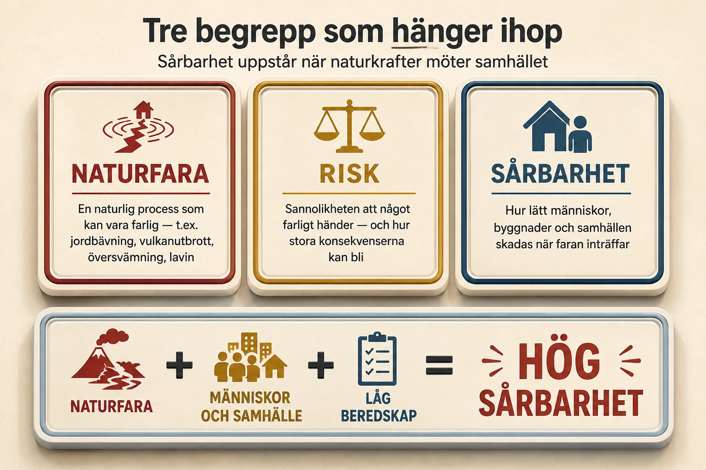
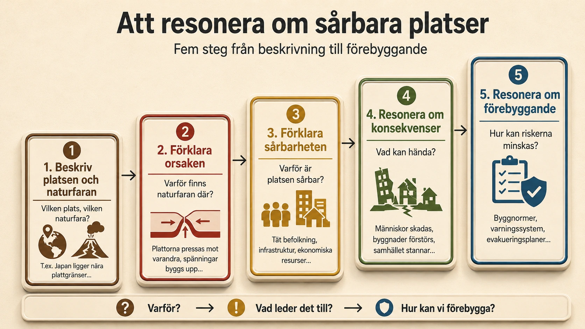
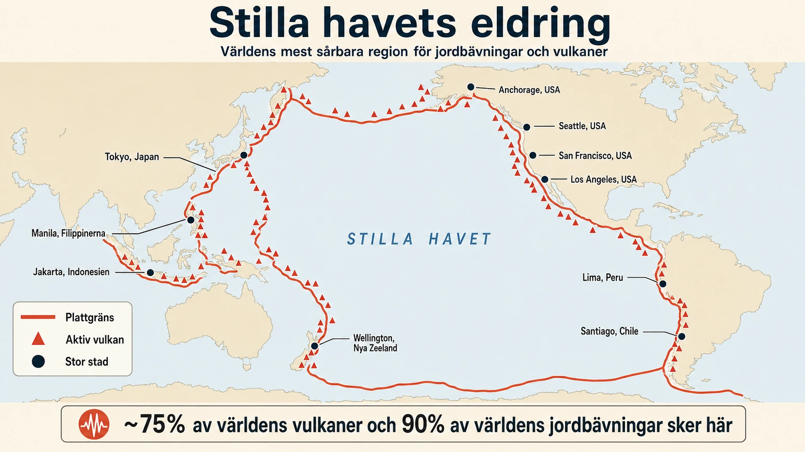
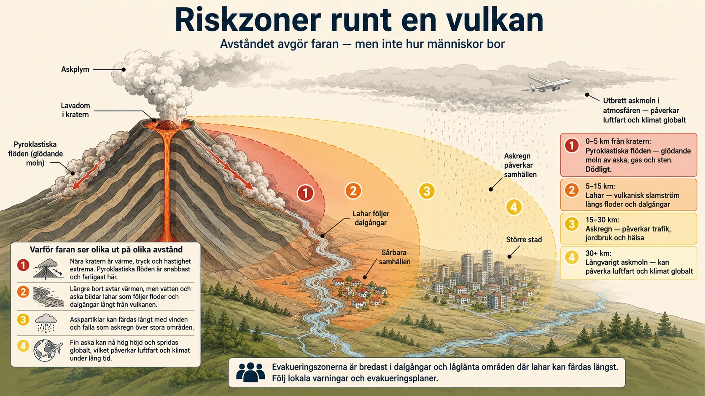
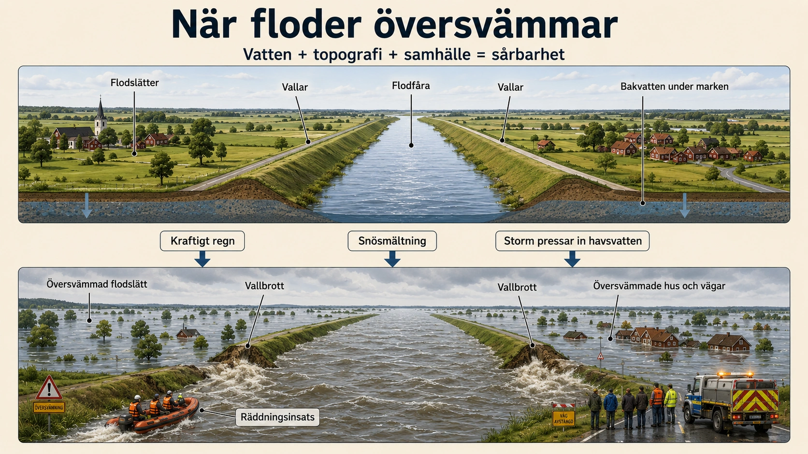

Sårbara platser
— när naturkrafter möter samhället —
Ett annorlunda avsnitt
Hittills i geologi-kapitlet har vi byggt kunskap om jordytan steg för steg: vittring (5), erosion (6), sluttningsprocesser (7) och själva materialet — mineraler, bergarter, jordarter och jordmåner (8). Nu kommer ett avsnitt som använder allt detta tillsammans. Och det gör det på ett nytt sätt.
I detta avsnitt ska du inte bara beskriva vad som händer i naturen. Du ska resonera om varför vissa platser är mer sårbara än andra. En sårbar plats är där människor, samhällen eller naturmiljöer riskerar att skadas av naturhändelser — jordbävningar, vulkanutbrott, översvämningar, jordskred, laviner. Men sårbarhet handlar inte bara om naturen. Det handlar lika mycket om hur många människor som bor där, hur samhället är byggt, hur rikt eller fattigt området är, och hur väl förberett samhället är.
Detta avsnitt är därför inte bara geologi — det är geografi i sin fulla bredd. Naturgeografi möter samhällsgeografi. Och du kommer märka att den här typen av resonemang återkommer i andra kapitel också. När vi senare studerar klimat kommer du resonera om sårbarhet vid extrema vindar, torka och regn. Den metod du lär dig här är ett verktyg för hela geografin.
Tre begrepp som hänger ihop
För att kunna resonera om sårbarhet behöver du tre nyckelbegrepp. De är inte synonymer — de hänger ihop, men säger olika saker.
Naturfara betyder att det finns en naturlig process som kan vara farlig. Det kan vara en jordbävning, ett vulkanutbrott, en lavin, en översvämning eller en torka. Naturfaran är något som naturen själv producerar.
Risk handlar om sannolikheten att något farligt händer — och hur stora konsekvenserna kan bli. Om en stad ligger vid en flod som ofta svämmar över är risken för översvämning hög. Risken är en kombination av hur troligt det är och hur allvarliga följderna är.
Sårbarhet handlar om hur lätt människor, byggnader, samhällen och naturmiljöer skadas när faran inträffar. Ett samhälle med starka byggnader, varningssystem och fungerande räddningstjänst är mindre sårbart än ett samhälle utan detta. Sårbarheten är vad samhället tar med sig in i situationen.

Sammantaget: naturfara + människor och samhälle + låg beredskap = hög sårbarhet. Det är ekvationen som gör att en jordbävning av samma storlek kan bli en hanterad händelse i ett land och en stor katastrof i ett annat.
Varför ligger sårbara platser där de ligger?
Sårbara platser är inte slumpmässigt utspridda över jorden. De finns ofta i tydliga geografiska mönster — där naturkrafterna är aktiva och där människor har valt att bo trots faran.
Många jordbävningar och vulkanutbrott sker nära plattgränser. Där rör sig jordens litosfärplattor mot varandra, från varandra eller längs varandra. Områden runt Stilla havet — Japan, Indonesien, Filippinerna, Chile, Kalifornien — är särskilt utsatta. Detta område kallas ibland för Eldringen, eftersom det finns många vulkaner och jordbävningar där.
Andra sårbara platser finns nära stora floder och låglänta kustområden. Där kan människor drabbas av översvämningar, stormfloder och erosion. Samtidigt bor många just där — eftersom marken ofta är bördig, det finns vatten, transporter är enkla och handel kan utvecklas. Bangladesh, Nildeltat i Egypten och kuststäder i Sydostasien är klassiska exempel.
Torka drabbar områden där nederbörden är liten eller ojämn. Om människor är beroende av jordbruk och saknar bevattningssystem eller ekonomiska resurser blir sårbarheten ännu större.
I bergsområden kan människor vara sårbara för ras, jordskred, slamströmmar och laviner — precis det vi studerat i avsnitt 7. Branta sluttningar, mycket regn, snösmältning och mänskliga ingrepp som vägbyggen kan öka risken.
Människan ökar och minskar sårbarhet
Människans verksamhet kan göra en plats mer sårbar. När människor bygger bostäder på flodslätter, branta sluttningar eller vulkansluttningar utsätter de sig medvetet eller omedvetet för risk. Ofta gör människor det eftersom de måste — marken är billigare där, eller så finns arbete och försörjningsmöjligheter just där faran är.
Avskogning kan öka risken för jordskred och översvämningar. Trädens rötter binder jorden och hjälper marken att ta upp vatten. När skogen tas bort rinner vattnet snabbare och jord kan börja glida.
Hårdgjorda ytor i städer — asfalt, betong, tak — ökar översvämningsrisken. När regnvatten inte kan sjunka ner i marken rinner det snabbt mot låga områden. Kraftiga skyfall i städer kan därför skapa översvämningar som inte hade hänt med naturlig mark.
Fattigdom är en viktig faktor. Fattiga människor kan tvingas bo i enklare hus på farliga platser. De kanske inte har råd att flytta, förstärka sina hus eller försäkra sig. Samhället kanske också saknar pengar till varningssystem, räddningstjänst och stabila vägar. Samma jordbävning kan därför få helt olika konsekvenser i olika länder.
Men sårbarhet går också att minska — och det är där samhällsplanering blir kraftfull. I jordbävningsområden kan hus byggas för att klara skakningar. I översvämningsområden kan vallar, dammar och våtmarker skydda. I jordskredsområden kan markundersökningar göras innan man bygger. I lavinområden kan prognoser, skyltning och regler för bebyggelse minska riskerna. Förebyggande arbete är ofta dyrt på kort sikt, men billigt jämfört med kostnaden av en katastrof som inte stoppats.
Att resonera — fem steg
När du ska resonera om en sårbar plats hjälper det att följa en strukturerad metod. Här är en modell i fem steg som du kan använda. Den bygger på att svara på tre grundfrågor: Varför? Vad leder det till? Hur kan vi förebygga?

Genom att gå igenom dessa fem steg får ditt resonemang struktur. Du visar inte bara enstaka fakta — du visar att du förstår samband mellan natur, samhälle och åtgärder.
Att använda orsakskedjor
Ett särskilt kraftfullt sätt att resonera är att skriva i orsakskedjor. Då visar du hur saker hänger ihop steg för steg. Här är några exempel:
Plattgräns → spänningar i berggrunden → jordbävning → byggnader skadas → människor blir sårbara → jordbävningssäkra hus minskar risken.
Kraftigt regn → marken blir vattenmättad → jordmassor börjar glida → jordskred → vägar och hus förstörs → bättre markundersökningar och dränering minskar risken.
Avskogning → färre rötter binder jorden → snabbare avrinning → ökad risk för översvämning och jordskred → återplantering och bättre markanvändning minskar sårbarheten.
När du skriver i kedjor blir det tydligt för läsaren — och för dig själv — att du förstår sambanden. Pilarna visar att en sak leder till nästa. Det är så geografiskt resonemang fungerar.
Begrepp att använda
När du resonerar om sårbara platser kan du använda begrepp som: sårbar plats, naturfara, risk, konsekvens, förebygga, samhällsplanering, plattgräns, förkastning, jordbävning, vulkanutbrott, tsunami, översvämning, torka, erosion, jordskred, ras, lavin, infrastruktur, tät befolkning, fattigdom, beredskap, varningssystem, byggnormer, evakuering.
Du behöver inte använda alla varje gång. Men välj de begrepp som passar den plats och naturfara du resonerar om — och använd dem korrekt.
I de följande underdelarna tillämpar vi metoden på tre konkreta naturfaror: jordbävningar (9B), vulkanutbrott (9C) och översvämningar (9D). Varje underdel visar hur sårbarhet ser ut för just den faran, och hur människor i olika delar av världen lever med risken.
Ett annorlunda avsnitt
- I detta avsnitt ska du resonera — inte bara beskriva
- Du ska förstå varför vissa platser är sårbara
- Sårbarhet är inte bara natur — det är också samhälle
- Metoden återkommer i klimatkapitlet senare
Hittills har vi studerat naturkrafter och material. Nu ska du använda allt tillsammans för att resonera om sårbara platser. En sårbar plats är där människor och samhällen kan skadas av naturhändelser. Sårbarhet handlar inte bara om naturen — det handlar lika mycket om hur människor lever och bygger.
Tre begrepp som hänger ihop
- Naturfara — naturlig process som kan vara farlig (jordbävning, vulkan, översvämning)
- Risk — sannolikheten + hur stora konsekvenserna kan bli
- Sårbarhet — hur lätt människor och samhällen skadas
- Ekvation: Naturfara + samhälle + låg beredskap = hög sårbarhet
Tre begrepp att kunna: naturfara (det naturen ger oss), risk (sannolikhet plus konsekvens), och sårbarhet (hur lätt skador uppstår). Tillsammans bildar de en ekvation: en naturfara blir farlig först när den möter ett samhälle som inte är förberett.
Lägg märke till:
- Tre färger — tre olika begrepp
- Naturfara kommer från naturen
- Risk är sannolikhet + konsekvens
- Sårbarhet är hur samhället står emot
- Ekvationen längst ner är avsnittets nyckel
Fundera: Kan ett samhälle vara sårbart utan att en naturfara har hänt än?
Var ligger sårbara platser?
- Plattgränser → jordbävningar och vulkaner (Eldringen)
- Floder och kuster → översvämningar (Bangladesh)
- Torra områden → torka
- Bergsområden → ras, lavin, jordskred
Sårbara platser följer geografiska mönster. Jordbävningar och vulkaner runt plattgränser (Stilla havets eldring). Översvämningar nära floder och låglänta kuster. Torka i torra områden. Ras och laviner i bergsområden. Människor bor ofta just där — för marken är ofta bördig, det finns vatten, eller arbete.
Människan ökar och minskar sårbarhet
- Bygga på farliga platser → ökar sårbarhet
- Avskogning → ökar risk för skred och översvämning
- Hårdgjorda ytor i städer → ökar översvämningar
- Fattigdom → svaga byggnader, ingen beredskap
- Men: samhällsplanering kan minska sårbarhet
Människan kan göra platser mer sårbara — genom att bygga på utsatta platser, ta bort skog, eller leva i fattigdom utan resurser. Men människan kan också minska sårbarhet genom samhällsplanering — byggnormer, vallar, varningssystem, evakueringsplaner.
Resonera i fem steg
- Steg 1: Beskriv platsen och naturfaran
- Steg 2: Förklara orsaken (varför där?)
- Steg 3: Förklara sårbarheten (vem och vad?)
- Steg 4: Resonera om konsekvenser
- Steg 5: Resonera om förebyggande
Lägg märke till:
- Fem steg i tydlig ordning
- Varje steg har egen färg
- Pilarna visar att stegen bygger på varandra
- Längst ner tre frågor: Varför? Vad leder det till? Hur förebygga?
Fundera: Vilket steg tycker du är svårast?
Orsakskedjor
- Skriv i kedjor med pilar
- Visar att du förstår samband
- Exempel: Plattgräns → spänningar → jordbävning → hus rasar → byggnormer minskar risken
Orsakskedjor är ett kraftfullt sätt att resonera. Med pilar visar du steg för steg hur en naturfara blir en konsekvens — och hur den kan förebyggas. Använd kedjor ofta i dina svar.
I de följande underdelarna tillämpar vi metoden på tre naturfaror: jordbävningar, vulkanutbrott och översvämningar.
Skillnaden mellan enkelt och utvecklat resonemang
När du resonerar om sårbara platser bedöms du både på vad du skriver och hur du skriver. En kort, korrekt mening kan ge ett godkänt svar. Men ett utvecklat resonemang — som visar att du förstår samband, använder begrepp och resonerar om både orsaker och åtgärder — kan ge ett mycket starkare svar. Skillnaden är inte längd. Skillnaden är hur sambanden mellan natur och samhälle förklaras.
Här är ett enkelt resonemang om jordbävningar i Japan:
Japan har många jordbävningar. Det beror på att landet ligger vid plattgränser. Det kan göra att hus rasar och människor dör.
Detta är korrekt och förklarar grundorsaken. Men det visar inte så många samband. Resonemanget stannar vid "hus rasar och människor dör" utan att förklara varför vissa drabbas värre än andra, eller vad som kan göras åt det.
Här är ett utvecklat resonemang om samma plats:
Japan är en sårbar plats eftersom landet ligger vid flera aktiva plattgränser i Stilla havets eldring. Där byggs spänningar upp när plattorna rör sig mot eller längs varandra. När spänningen släpper kan kraftiga jordbävningar uppstå. Eftersom Japan har stora städer, tät befolkning och mycket infrastruktur nära kusten kan konsekvenserna bli stora. Ett skalv under havet kan dessutom orsaka tsunami, vilket gör kustområden extra utsatta. Samtidigt minskar Japan sin sårbarhet genom jordbävningssäkra byggnader, varningssystem, evakueringsvägar och övningar. Det visar att en plats kan vara naturligt utsatt men ändå minska riskerna genom samhällsplanering.
Det utvecklade resonemanget är inte mycket längre — kanske dubbelt så långt. Men det är pedagogiskt mycket starkare. Det förklarar orsaker, sårbarhet, konsekvenser och åtgärder. Det använder geografiska begrepp (plattgränser, eldringen, spänningar, infrastruktur, tsunami, sårbarhet, samhällsplanering). Och det visar en viktig pedagogisk poäng: att en plats kan vara utsatt men ändå mindre sårbar än andra med samma utsatthet.
När du själv skriver är det här skillnaden som gör att ditt resonemang lyfter. Kom ihåg orsakskedjorna. Kom ihåg de tre frågorna: varför, vad leder det till, hur kan vi förebygga? Och använd begreppen aktivt.
Sårbarhet återkommer i hela geografin
Sårbarhetsperspektivet är inte unikt för geologi. Det är en av geografins centrala tankesätt och kommer återkomma genom hela ämnet. Att lära dig metoden här ger dig ett verktyg som fungerar långt utanför detta kapitel.
I klimatkapitlet kommer du resonera om sårbarhet vid extrema vindar — tropiska cykloner som drabbar Filippinerna och Bangladesh hårt, men där rika länder kan bygga skydd. Du kommer resonera om torka — där samma brist på regn kan vara svår för bönder i Kalifornien men katastrofal i Sahel-området. Och du kommer resonera om extremregn och skyfall — där hårdgjorda städer kan översvämmas trots att de ligger i rika länder.
Genomgående är pedagogiken samma. Det är inte naturen ensam som skapar katastrofen. Det är mötet mellan naturkraften och samhället. Och samhället kan formas, byggas och planeras för att vara mindre sårbart.
I samhällsgeografin kommer du också möta sårbarhetsperspektivet. Hur är ekonomin sårbar för störningar — finanskriser, leveransbrott, pandemier? Hur är energiförsörjningen sårbar — för konflikter, klimatförändring, infrastrukturattacker? Hur är livsmedelssäkerheten sårbar i en värld med koncentrerad produktion?
I befolkningsgeografin möter du sårbarhet i form av migration. Människor flyttar ofta från sårbara platser till mindre sårbara — från låglänta delta till städer på höjder, från torkdrabbade jordbruksbygder till industriregioner. Migration är i sig en respons på sårbarhet.
När du läser om sårbara platser tränas du alltså i ett tänkesätt som följer dig genom geografi. Det handlar om att se mönster, koppla orsaker till konsekvenser, och förstå att samhället formar — och formas av — naturen. Att läsa landet är att läsa både dess geologi och dess människor.
Att tänka i system: människa, natur och tid
En djupare aspekt av sårbarhetsresonemang är att lära sig tänka i system. Naturkrafter och samhällen är inte separata maskinerier. De påverkar varandra hela tiden, ofta över långa tidsperspektiv.
Exempel: när människor bygger en stad på flodslätter får de fördelar av platt mark och tillgång till vatten. Men efter generationer har staden vuxit så stor att en översvämning som hade varit ohanterlig under medeltiden nu kan kosta miljarder. Samtidigt har staden byggt vallar och pumpsystem — vilket gör att översvämningar blir sällsyntare men, när de väl kommer, potentiellt katastrofalare (eftersom människorna inte längre lever med risken i sin vardagskunskap). Detta är ett klassiskt exempel på vad geografer kallar levee paradox — vallarna minskar små översvämningar men ökar samhällets utsatthet för verkligt stora.
Ett annat exempel: klimatförändringen ändrar förutsättningarna för sårbarhet över hela världen. Områden som varit relativt säkra kan bli mer utsatta — torra somrar i Sverige, kraftigare cykloner i Bangladesh, mer skogsbränder i Medelhavsområdet. Sårbarhet är därmed inte statisk. Den förändras över tid, och människor måste anpassa sina samhällen i takt med att riskerna förändras.
Att resonera om sårbara platser är därför att resonera om processer snarare än om enstaka händelser. Hur bygger samhällen upp eller bryter ner sin förmåga att hantera naturkrafter? Hur förändras risker över tid? Hur kan vi planera för en framtid som inte ser likadan ut som det förflutna?
Dessa frågor är komplexa. Men de är fundamentala för att förstå vår värld. Och de börjar med den enkla insikten du tar med dig från detta avsnitt: en katastrof är inte natur ensam. Det är natur som möter ett oförberett samhälle.
Jordbävningar — när jordskorpan släpper sin spänning
En jordbävning uppstår när berggrunden plötsligt rör sig. Det sker när spänningar som byggts upp i jordskorpan under lång tid plötsligt släpper. Tänk dig en bågfjäder som spänns hårdare och hårdare — när den slutligen knäpper iväg sker det med stor kraft. Detsamma händer i jordskorpan.
De flesta jordbävningar sker nära plattgränser — där jordens stora litosfärplattor möts. Plattorna rör sig långsamt, ofta bara några centimeter per år, men de rör sig inte jämnt. Ibland fastnar berggrunden i kanten av en platta och plattorna fortsätter att pressas mot varandra. Spänningen byggs upp under decennier eller århundraden tills den blir för stor — då släpper berggrunden plötsligt och en jordbävning uppstår.
Det finns tre huvudtyper av plattgränser, och de ger olika sorters jordbävningar. Vid konvergenta gränser pressas plattor mot varandra — ofta pressas en havsplatta ner under en annan platta i en subduktionszon. Detta är källan till de allra största jordbävningarna, som de utanför Japan och Chile. Vid transforma gränser glider plattor förbi varandra — som vid San Andreasförkastningen i Kalifornien. Vid divergenta gränser rör sig plattorna isär — som vid mitt-atlantiska ryggen — och här är jordbävningarna oftast mindre.
![Karta över Stilla havet med kontinenterna runt om. Tjocka röd-oranga linjer markerar plattgränser längs en cirkel runt hela Stilla havet - från Japan genom Filippinerna, Indonesien, Nya Zeeland, vidare till västra Sydamerika (Chile, Peru), upp längs västra Nordamerika (San Francisco, Los Angeles, Seattle), Alaska och tillbaka till Japan. Aktiva vulkaner markerade som röda trianglar längs eldringen. Stora städer som Tokyo, Manila, Jakarta, Wellington, Santiago, Lima, San Francisco, Los Angeles, Seattle, Anchorage markerade med prickar. En sub-titel anger: '~75% av världens vulkaner och 90% av världens jordbävningar sker här'.](../../img/geologi/eldringen-karta.webp)
Detta cirkelformade område runt Stilla havet kallas Eldringen. Cirka 90% av världens jordbävningar och 75% av världens aktiva vulkaner finns här. Det är ett av tydligaste exemplen på hur sårbara platser följer geografiska mönster snarare än fördelas slumpmässigt.
Vad gör en plats sårbar för jordbävningar?
Naturfaran är likadan i hela Eldringen — plattgränser och spänningar. Men sårbarheten varierar enormt mellan olika platser. Fyra faktorer är avgörande.
Den första är byggnadernas kvalitet. Hus som är byggda för att tåla skakningar — med armerad betong, flexibla konstruktioner, och tester mot seismisk belastning — klarar jordbävningar mycket bättre. Hus som är byggda enklare, utan armering och med tunga tak på svaga väggar, kan rasa över sina invånare. Forskning visar att byggnadskollaps står för nästan alla dödsfall vid jordbävningar. Det är inte själva skakningen som dödar — det är vad människor har över sig.
Den andra är befolkningstäthet. En jordbävning i en obebodd region har inga mänskliga konsekvenser, hur stark den än är. En jordbävning under en miljonstad kan bli en av historiens värsta katastrofer. Många av Eldringens städer är mycket stora — Tokyo, Mexico City, Manila, Jakarta — och just denna kombination av hög naturfara och hög befolkningstäthet skapar enorma risker.
Den tredje är infrastruktur och samhällsfunktioner. Vägar, broar, järnvägar, vattenledningar, gasledningar, elnät, sjukhus, skolor — allt detta kan skadas vid en jordbävning. Och när infrastrukturen skadas blir det svårt att rädda människor. Sjukhus utan el kan inte fungera. Vägar med rasade broar släpper inte fram räddningstjänst. Vattenledningar som brister förorenar dricksvatten och hindrar brandsläckning. Skadorna sprider sig som ringar på vatten genom hela samhället.
Den fjärde är ekonomi och beredskap. Rika länder har resurser att förbereda sig — byggnormer, varningssystem, övningar, räddningsstyrkor, riskkartor, försäkringar. Fattigare länder har inte alltid de resurserna, även om de står inför samma naturfara. Detta är därför samma magnitud kan ge dramatiskt olika konsekvenser i olika delar av världen.
Förebyggande — hur sårbarhet kan minskas
Jordbävningar går inte att stoppa. Plattorna kommer fortsätta röra sig. Men samhällen kan minska sin sårbarhet på flera sätt, och vissa länder visar att det går.
Jordbävningssäkra byggnader är den viktigaste enskilda åtgärden. Modern byggteknik kan skapa hus som "vaggar" med skakningen istället för att rasa. Armerad betong, flexibla fundament, base isolators som låter byggnaden glida ovanpå marken — alla dessa tekniker har utvecklats främst i Japan och Kalifornien. Att förstärka befintliga byggnader är dyrare och svårare än att bygga nya korrekta — och därför är gamla städer ofta mer sårbara än nya.
Varningssystem kan ge värdefulla sekunder till några minuter. Modern seismologi kan upptäcka jordbävningens första vågor (P-vågorna) som rör sig snabbt men gör lite skada, och varna före de långsammare men mer destruktiva S-vågorna anländer. Japan har världens mest avancerade system — tåg kan stoppas automatiskt, hissar styra till närmaste våning, och människor få varningar på telefonen.
Övningar och utbildning är avgörande. I Japan börjar jordbävningsövningar redan i förskolan. Barn lär sig "Drop, Cover, Hold" — släng dig ner, ta skydd under bord eller liknande, håll fast. Att alla vet vad de ska göra minskar paniken och därmed antalet skador.
Samhällsplanering avgör var och hur det byggs. Att inte bygga sjukhus och skolor precis ovanför aktiva förkastningar är en självklarhet i moderna jordbävningsområden. Att kartlägga riskzoner och anpassa stadsplaner därefter är dyrt men sparar liv när katastrofen kommer.
I djupdykningen jämför vi tre städer som drabbats av jordbävningar — Tokyo, San Francisco och Port-au-Prince — och ser hur olika faktorer gjort katastroferna helt olika. I en andra djupdykning tittar vi närmare på tsunami, som ofta följer på undervattens-jordbävningar.
Vad är en jordbävning?
- En jordbävning = när berggrunden plötsligt rör sig
- Sker när spänningar släpper i jordskorpan
- Vanligast nära plattgränser
- ~90% av världens jordbävningar sker i Eldringen
En jordbävning uppstår när berggrunden plötsligt rör sig. Det sker när spänningar som byggts upp i jordskorpan släpper. De flesta jordbävningar sker nära plattgränser — där jordens plattor möts.
Lägg märke till:
- En cirkel runt Stilla havet
- Plattgränser markerade i röd-orange
- Många stora städer ligger just där
- Vulkaner och jordbävningar följer samma mönster
Fundera: Varför har människor byggt så stora städer just där det är farligast?

Plattgränser — tre typer
- Konvergenta: plattor pressas mot varandra (Japan, Chile)
- Transforma: plattor glider förbi varandra (San Andreas)
- Divergenta: plattor rör sig isär (Mid-Atlanten)
Tre typer av plattgränser ger olika jordbävningar. Konvergenta (där plattor pressas mot varandra) ger de största. Transforma (där de glider förbi varandra) ger ofta känd förkastningar som San Andreas. Divergenta ger oftast mindre skalv.
Vad gör en plats sårbar?
- Byggnaders kvalitet — svaga hus rasar
- Befolkningstäthet — fler människor i fara
- Infrastruktur — vägar, sjukhus, ledningar
- Ekonomi och beredskap — fattiga länder mer sårbara
Fyra faktorer avgör hur sårbar en plats är. Byggnaderna är viktigast — byggnadskollaps står för nästan alla dödsfall vid jordbävningar. Befolkningstäthet bestämmer hur många som drabbas. Infrastruktur avgör om räddning kan komma fram. Och ekonomi avgör om landet har råd med förebyggande arbete.
Hur kan sårbarhet minskas?
- Jordbävningssäkra hus — armerad betong, flexibla fundament
- Varningssystem — sekunder kan rädda liv
- Övningar — alla vet vad de ska göra
- Samhällsplanering — bygg inte sjukhus över förkastningar
Jordbävningar går inte att stoppa, men sårbarhet kan minskas. Jordbävningssäkra byggnader är viktigast. Varningssystem kan ge sekunder till några minuter. Övningar gör att alla vet vad de ska göra. Och samhällsplanering avgör var det byggs.
I djupdykningarna jämför vi tre städer (Tokyo, San Francisco, Haiti) och tittar närmare på tsunami.
Tsunami — när jordbävningen träffar havet
En tsunami är inte en vanlig våg. Vanliga vågor bildas av vind som driver vattnet i ytan. En tsunami bildas när hela vattenmassan plötsligt rör sig — oftast eftersom havsbottnen själv har förskjutits vid en jordbävning. När en stor del av en plattgräns under havet plötsligt brister kan miljontals kubikmeter vatten flyttas på sekunder. Det är denna förflyttning som blir tsunamin.
Det fascinerande och farliga med tsunamier är hur de uppför sig. Ute på öppet hav är tsunamin oftast bara en halvmeter hög — knappt synlig från ett fartyg. Men den rör sig extremt snabbt, ofta i 700-900 km/h. Det är hastigheten av ett passagerarflygplan. När tsunamin närmar sig grundare vatten bromsas dess botten in av friktion mot havsbottnen, medan toppen fortsätter. Vågen komprimeras och växer på höjden. En nästan osynlig öppen-havsvåg kan bli 10, 20, ja ibland 40 meter hög när den når kusten.
Den största moderna tsunamikatastrofen var Sumatra-Andaman-jordbävningen 2004. Magnitud 9,1, en av de starkaste som någonsin uppmätts. Vågen nådde 14 länder runt Indiska oceanen och dödade cirka 228 000 människor. Många av dem hörde inte talas om tsunamin förrän vågen redan var där. Indiska oceanen hade inte samma varningssystem som Stilla havet, och därför fanns ingen tid att evakuera.
Sedan dess har varningssystem byggts ut globalt. Modern teknik kan upptäcka en jordbävning, beräkna risken för tsunami och varna kustsamhällen inom minuter. Men tiden räcker inte alltid till. Vid när-tsunamier — där vågen når land snabbt efter jordbävningen — kan det vara fråga om bara några minuter. Den klassiska säkerhetsregeln är: om du står vid kusten och känner en stark jordbävning, vänta inte på en officiell varning. Ta dig till högre mark omedelbart.
Tsunamier visar tydligt hur sårbarhet handlar om sammansatta faktorer. En jordbävning + en kust + befolkning + tid + varningssystem + utbildning. Ändras en av dessa faktorer ändras katastrofens storlek dramatiskt.
Sveriges egen jordbävningsrisk
Det är lätt att tänka att jordbävningar är något som händer "någon annanstans". Eldringen, Japan, Kalifornien, Haiti — inte Sverige. Men det är inte hela sanningen. Sverige har också jordbävningar, även om de är små jämfört med dem vi sett i världsnyheterna.
Sverige ligger inte vid någon aktiv plattgräns. Vi sitter på den eurasiska plattan, mitt på den, långt från dess kanter. Det är därför vi inte har de stora skalven. Men vi har en annan källa till seismisk aktivitet: landhöjningen efter istiden. När inlandsisen smälte för cirka 10 000 år sedan började landet höja sig — och det fortsätter än idag, med upp till en centimeter per år i norra Sverige. Denna långsamma rörelse skapar spänningar i berggrunden som ibland släpper som jordbävningar.
Den mest kända historiska svenska jordbävningen är Skövde-jordbävningen 1759, som hade magnitud cirka 5. Det är inte stort i världsmått, men det räcker för att skaka byggnader och ge skador. Senare har vi haft skalv i Norrbotten, Norrtälje och flera andra platser. Sveriges geologiska undersökning övervakar kontinuerligt seismisk aktivitet och registrerar 30-100 mätbara skalv per år, varav flertalet är mycket små.
Vad betyder detta för svenska elever? Det betyder att även Sverige ligger på en aktiv jordskorpa, även om vår är relativt stilla. Den största praktiska konsekvensen är att stora svenska byggprojekt — kärnkraftverk, höghus, broar, dammar — måste konstrueras med viss seismisk hänsyn. Det är inte fråga om att skydda mot Tokyo-storskalv, utan om att vara förberedd för de relativt små skalv som faktiskt kan ske.
Pedagogiskt visar Sveriges egen jordbävningsrisk att risk-skalan är global. Vissa platser är extremt utsatta, andra är extremt säkra, men ingen plats är helt riskfri. Och även Sverige måste tänka på sårbarhet — kanske inte vid jordbävningar i samma skala som Eldringen, men vid översvämningar, skred, stormar och klimateffekter. Sårbarhetsmodellen vi lärt oss i 9A gäller överallt — den anpassar sig bara till vilka faror som är aktuella där.
Vulkanutbrott — fascination och fara
Vulkaner är några av jordens mest dramatiska naturkrafter. De skapar lava, aska, giftiga gaser och ibland enormt destruktiva pyroklastiska flöden. Och ändå bor miljoner människor i deras närhet — ibland mycket nära. Detta paradoxala förhållande — där det farliga också är värdefullt — är vad som gör vulkanrisk till ett av geografins mest pedagogiskt intressanta exempel.
Det viktiga att förstå är att vulkaner inte alla är likadana. Vissa har mjuka, effusiva utbrott där lava sakta rinner ner från kratern. Andra har våldsamma, explosiva utbrott där hela bergstoppar kan sprängas i luften och askmoln nå stratosfären. Dessa två typer av vulkaner skapar helt olika risker och kräver helt olika beredskap.
Var ligger vulkanerna?
Precis som jordbävningar följer vulkaner geografiska mönster. De flesta finns nära plattgränser:
Vid subduktionszoner — där en havsplatta pressas ner under en annan platta — smälter berggrunden och bildar magma. Denna magma kan stiga upp och bilda vulkaner ovanför subduktionszonen. Detta är ursprunget till de flesta av Eldringens vulkaner — i Japan, Filippinerna, Indonesien, Anderna, västra USA och Alaska. Dessa vulkaner är ofta explosiva eftersom magman är trögflytande och kan bygga upp högt tryck innan den släpps ut.
Vid divergenta plattgränser — där plattor rör sig isär — kan magma välla upp från jordens inre. Mitt-atlantiska ryggen är ett klassiskt exempel, och Island ligger där den passerar genom landytan. Vulkanerna här är ofta effusiva — magman är mer lättflytande, och utbrotten är mindre explosiva (men kan ändå vara dramatiska, som vid Eyjafjallajökulls aska-utbrott 2010).
Slutligen finns hot spots — platser där magma stiger upp mitt på en platta, inte vid en gräns. Hawaii är det mest kända exemplet. Här flyter Stillahavsplattan långsamt över en stationär källa av varm magma. När plattan rör sig bildas en kedja av vulkanöar — den senaste är "live", de äldre har slocknat och rört sig västerut. Detta är en helt annan mekanism än subduktionszonsvulkanerna.
Vulkanernas olika faror
När en vulkan får utbrott kan flera olika faror skapas samtidigt. Att förstå dessa olika faror är centralt för att förstå sårbarhet.
![Tvärsnitt av en stratovulkan med koncentriska riskzoner. Innersta zonen (röd, 0-5 km): pyroklastiska flöden - glödande moln av aska, gas och sten. Andra zonen (orange, 5-15 km): lahar - vulkanisk slamström längs floder och dalgångar. Tredje zonen (gul, 15-30 km): askregn som påverkar trafik, jordbruk och hälsa. Yttersta zonen (ljusgul, 30+ km): långvarigt askmoln som kan påverka luftfart och klimat globalt. Pilar visar vart pyroklastiska flöden kan röra sig. En liten by markerad i den orangea zonen, en större stad i den gula zonen, en flod som visar vart lahar följer.](../../img/geologi/vulkan-riskzon.webp)
Pyroklastiska flöden är de farligaste och snabbaste. Det är glödheta moln av gas, aska och sten som rusar nerför vulkanens sluttningar med hastigheter på 100-700 km/h, vid temperaturer på flera hundra grader. Det går inte att springa undan. Pyroklastiska flöden är vad som dödade de flesta i Pompeji år 79 och i Saint-Pierre på Martinique 1902. De når oftast 5-15 km från vulkanen — räckvidden är begränsad men inom den är dödligheten total.
Lava är glödande smält berg som rinner från vulkanen. Lava är farlig för byggnader och egendom men sällan för människor i moderna samhällen — den rör sig långsamt nog att de flesta kan evakuera. Effusiva vulkaner som Hawaiis Kīlauea kan förstöra hus och vägar med lava, men kräver sällan människoliv.
Aska är finkornigt material som kastas upp i luften vid explosiva utbrott. Aska kan föras hundratals eller tusentals kilometer av vinden. Den kan orsaka andningsproblem, förstöra jordbruk, blockera vägar och stoppa flygtrafik. Eyjafjallajökulls utbrott på Island 2010 stoppade nästan all flygtrafik över Europa i en vecka — utan att en enda människa dog av själva askan, men ekonomiska förluster nådde miljarder euro.
Lahar är vulkaniska slamströmmar (samma fenomen vi studerade i avsnitt 7). När vulkanisk aska blandas med regnvatten eller smältvatten från glaciärer på vulkanens topp bildas tjocka, snabba strömmar som följer dalgångar. Lahar kan röra sig 50-80 km/h och nå hundratals kilometer från själva vulkanen. Armero-katastrofen i Colombia 1985 — som vi diskuterade i avsnitt 7 — är det klassiska exemplet, där 23 000 människor dog 50 km från vulkanen.
Vulkangaser som svaveldioxid och koldioxid kan vara dödliga i höga koncentrationer. Vissa områden runt aktiva vulkaner har "döda zoner" där gas ansamlas i sänkor. Och stora utbrott kan släppa så mycket gas att klimatet påverkas globalt — vi återkommer till det i fördjupningen.
Varför bor människor nära vulkaner?
Det är ett av geografins mest fascinerande paradoxer. Vulkaner är farliga, men miljoner människor bor i deras närhet — ibland direkt på sluttningarna. Varför?
Det viktigaste skälet är jordmånen. Vulkanisk aska bryts ner till exceptionellt bördig jord — den är full av mineralämnen som växter behöver. Bönder som odlar på vulkansluttningar kan få flera skördar per år av hög kvalitet. Detta är därför Java i Indonesien — som är fullt av aktiva vulkaner — är så tätbefolkat. Det är därför Neapel-området runt Vesuvius har odlats kontinuerligt i tusentals år. Det är därför Mexikos jordbruk är så starkt i de vulkaniska centralområdena. Samma process som gör platsen farlig gör den värdefull.
Andra skäl: turism (vulkaner är spektakulära), geotermisk energi (vulkanisk värme används för elektricitet på Island och i Nya Zeeland), kulturell tradition (människor har bott där i generationer och kan inte enkelt flytta), och brist på alternativ (i många länder är vulkanområdena de bästa jordbruksmarkerna).
Vad gör en plats sårbar för vulkanutbrott?
Fyra faktorer avgör hur sårbart ett vulkanområde är.
Den första är avståndet och vinden. Olika faror sträcker sig olika långt. Pyroklastiska flöden når 5-15 km. Lahar följer dalgångar och kan nå 100+ km från vulkanen. Aska kan föras tusentals kilometer av vinden. Människor som bor nära kratern är utsatta för de snabbaste och dödligaste farorna; de som bor längre bort främst för aska och eventuellt lahar längs floder.
Den andra är befolkningstäthet. Vesuvius vid Neapel är pedagogiskt centralt här — cirka tre miljoner människor bor inom 30 km från vulkanen. En evakuering av så många människor på kort tid är extremt svår. Merapi vid Yogyakarta i Indonesien har liknande problem.
Den tredje är varnings- och övervakningssystem. Modern vulkanologi kan ofta upptäcka tecken på att magma rör sig — små jordskalv, gasutsläpp, markdeformation. Detta kan ge dagar till veckor av förvarning. Men inte alltid. Vulkaner kan också få utbrott utan tydlig förvarning, eller med varningar som forskare har svårt att tolka.
Den fjärde är politisk vilja att evakuera. Att flytta tiotusentals eller hundratusentals människor är ekonomiskt och politiskt dyrt. Om en vulkan visar varningstecken men ingenting händer kan myndigheter tveka — om de evakuerar för tidigt tappar de förtroende; om de väntar för länge kan det bli katastrof. Detta är ett dilemma utan enkla svar.
Förebyggande arbete
Vulkanrisker går inte att eliminera, men de kan hanteras genom strukturerad samhällsplanering.
Övervakning är grunden. Aktiva vulkaner i moderna länder övervakas kontinuerligt med seismografer, gasdetektorer, GPS-mätare och satellitobservationer. Varje förändring registreras och analyseras av vulkanologer.
Riskzoner definieras genom vetenskaplig analys av tidigare utbrott. Områden inom 5-15 km från en aktiv stratovulkan kan klassas som icke-bebyggbara. Längs floddalar som kan ta lahar kan byggrestriktioner gälla. Sjukhus, skolor och kritisk infrastruktur ska placeras utanför de farligaste zonerna.
Evakueringsplaner ska finnas i förväg och övas regelbundet. Människor måste veta vart de ska, hur de tar sig dit, och vilka tecken som utlöser evakuering. I områden runt aktiva vulkaner som Vesuvius eller Merapi finns omfattande planer för hur folkmassor ska flyttas.
Information och utbildning är kritiska. Människor som bor nära vulkaner behöver förstå riskerna och tecknen — och behöver lita på myndigheterna när varningar utfärdas. Här är historisk erfarenhet viktig: i områden där människor har personliga minnen av utbrott är beredskapen ofta bättre.
I djupdykningen tittar vi närmare på två konkreta exempel: Vesuvius nära Neapel i Italien, och Merapi nära Yogyakarta på Java i Indonesien.
Vad är ett vulkanutbrott?
- Vulkaner ger lava, aska, gas, lahar och pyroklastiska flöden
- Vissa är effusiva (mjuka, lava rinner)
- Vissa är explosiva (våldsamma, aska + pyroklastiska flöden)
- Dessa två typer kräver olika sorts beredskap
Vulkaner skapar flera olika faror — inte bara lava. Effusiva vulkaner har lava som rinner ner från kratern. Explosiva vulkaner kan spränga toppen och skicka aska högt upp i atmosfären. De två typerna har olika risker och kräver olika beredskap.
Var finns vulkaner?
- Vid subduktionszoner (Eldringen, Japan, Indonesien)
- Vid divergenta gränser (Island)
- Vid hot spots (Hawaii)
Vulkaner följer geografiska mönster. De flesta finns vid plattgränser — subduktionszoner ger oftast explosiva vulkaner (Eldringen), divergenta gränser ger ofta effusiva (Island). Hot spots som Hawaii är ett undantag — där stiger magma upp mitt på en platta.
Vulkanernas faror
- Pyroklastiska flöden — glödheta moln, 100-700 km/h, dödligt nära vulkanen
- Lava — långsam, förstör egendom men sällan människor
- Aska — kan föras tusentals km, stoppar flyg, förstör skördar
- Lahar — vulkanisk slamström, kan nå 100+ km från vulkanen
- Vulkangaser — kan vara dödliga, kan påverka klimatet
Lägg märke till de fyra zonerna:
- Röd zon (0-5 km): pyroklastiska flöden — dödligt
- Orange zon (5-15 km): lahar längs floder
- Gul zon (15-30 km): askregn
- Ljusgul (30+ km): långvarigt askmoln
Fundera: Varför följer lahar dalgångar?

Varför bor människor nära vulkaner?
- Bördig jord — vulkanaska ger näringsrik mark
- Turism
- Geotermisk energi (Island, Nya Zeeland)
- Tradition — människor bor där generationer levt
- Samma process som gör platsen farlig gör den värdefull
Trots farorna bor miljoner människor nära vulkaner. Den största anledningen är jordmånen — vulkanisk aska bryts ner till exceptionellt bördig jord. Java i Indonesien och Neapel-området är fulla av människor just för att jordbruket är så bra där.
Vad gör en plats sårbar?
- Avståndet och vinden — bestämmer vilka faror som når dit
- Befolkningstäthet — fler människor att evakuera
- Varningssystem — kan ge dagar till veckor förvarning
- Politisk vilja att evakuera — dyrt att flytta många
Fyra faktorer avgör hur sårbar en vulkanplats är. Avståndet bestämmer vilka faror som kan nå dit. Befolkningstätheten avgör hur många som drabbas. Varningssystem kan rädda liv — modern vulkanologi kan ofta upptäcka tecken på utbrott. Och politisk vilja att evakuera är ofta ett dilemma utan enkelt svar.
Hur minskar man sårbarhet?
- Övervakning — seismografer, gasdetektorer, GPS
- Riskzoner — bygg inte i röda zoner
- Evakueringsplaner — övas regelbundet
- Information — människor måste förstå riskerna
Vulkanrisker kan inte tas bort, men kan hanteras. Övervakning är grunden — aktiva vulkaner mäts dygnet runt. Riskzoner styr vad som får byggas var. Evakueringsplaner måste finnas i förväg. Och utbildning hjälper människor att förstå när de ska lyssna på myndigheterna.
I djupdykningen tittar vi på Vesuvius och Merapi — två klassiska vulkaner med många människor i närheten.
Hot spots — vulkaner mitt på plattor
De flesta vulkaner sitter vid plattgränser, men det finns en intressant grupp som inte gör det: hot spots. Det är platser där magma stiger upp från djupt nere i jordens mantel, genom plattan, och ger upphov till vulkaner mitt på en kontinent eller havsbotten. Hot spots är geografiskt fascinerande eftersom de inte följer plattornas kanter — de är som "fasta brännare" som plattorna glider över.
Det klassiska exemplet är Hawaii. Den hawaiianska ökedjan är resultatet av att Stillahavsplattan rör sig nordvästlig över en stationär källa av varm magma i jordens mantel. När plattan rör sig bildas successivt nya vulkanöar — den senaste och mest aktiva är Stora ön (Hawaii Island) med vulkanen Kīlauea, en av världens mest aktiva. De äldre öarna har slutat producera lava och rör sig västerut tills de slutligen sjunker tillbaka under havsytan som "guyots". Detta är geografi i otroligt djup tidsskala — kedjan sträcker sig 6 000 km i nordvästlig riktning över Stilla havet och representerar 80 miljoner år av rörelse.
Island är ett särfall — där möter ett hot spot också en divergent plattgräns (mitt-atlantiska ryggen). Det är därför Island har så enormt mycket vulkanisk aktivitet i förhållande till sin storlek. Geotermisk energi från denna aktivitet ger Island nästan all sin elektricitet och uppvärmning — en sårbarhet som omvandlats till resurs.
Yellowstone i USA är ett annat hot spot — en av världens största supervulkaner. Yellowstones senaste enorma utbrott var för 640 000 år sedan, men området är fortfarande termiskt aktivt — geysrar, varma källor och mindre utbrott är vanliga. Frågan om när nästa supereruption kan inträffa är seriös för vulkanologer. När den kommer (vilket statistiskt sett kan vara i morgon, om hundratusen år, eller aldrig) skulle den vara en global händelse — askmoln kunde påverka klimatet i flera år.
Hot spots visar att vulkaner inte alltid följer plattgränser. De är en påminnelse om att jordens inre värme kan bryta igenom på oväntade platser, och att risk-modeller som bara fokuserar på plattgränser missar viktiga geologiska realiteter.
När vulkanerna påverkar världen — stora utbrott och klimatet
De flesta vulkanutbrott är lokala händelser. Men verkligt stora utbrott kan påverka klimatet globalt — och därmed människor långt från själva vulkanen. Detta är ett pedagogiskt viktigt fenomen som visar hur naturkrafter kan kopplas över planetens skala.
Mekanismen är följande. Vid riktigt stora utbrott kastas svaveldioxid upp i stratosfären (15-50 km höjd). I stratosfären reagerar svaveldioxiden med vattenånga och bildar små droppar av svavelsyra. Dessa droppar reflekterar solljus tillbaka ut i rymden — och kyler därmed jorden. Effekten kan pågå i 1-3 år tills dropparna sakta sjunker ner och försvinner.
Det mest extrema exemplet i historisk tid är Tambora-utbrottet 1815 i Indonesien. Det var det största utbrottet på minst 1000 år — magnitud 7 på vulkanindex-skalan. Året efter, 1816, fick världen ett "år utan sommar". Temperaturen sjönk med flera grader globalt. I Europa och Nordamerika misslyckades skördar. Hungersnöd spred sig. I Sverige fick man missväxt och stora svårigheter. Tusentals människor dog av svält — inte av själva vulkanen, utan av dess klimatpåverkan tusentals kilometer bort.
Andra exempel: Krakatoa 1883 (Indonesien) sänkte globaltemperaturen ca 1,2°C i flera år. Pinatubo 1991 (Filippinerna) sänkte globaltemperaturen ca 0,5°C i ungefär två år. Dessa är välmätta händelser som vetenskaplig data fortfarande granskas för.
För svenska elever är detta intressant av flera skäl. För det första visar det att geografi är planetär — en händelse på Java kan påverka skördar i Skandinavien. För det andra visar det att klimatfrågan har naturliga inslag, inte bara mänskliga. Vulkaner har kylt jorden naturligt under hela jordens historia. Detta betyder inte att människans utsläpp inte spelar roll — tvärtom — men det betyder att naturen själv har starka klimatkrafter som vi måste förstå parallellt med våra egna utsläpp.
För det tredje visar det att de allra största vulkanutbrotten är osäkerheter som vi måste leva med. Vi kan inte förutse när nästa Tambora-skala-utbrott sker. Vi kan inte stoppa det när det kommer. Vi kan bara förbereda oss — globalt — för att hantera dess klimatpåverkan om det inträffar. Det är en typ av sårbarhet som inte fångas av lokala riskzoner runt en vulkan, utan av global samhällsplanering. Och detta är en av geografins djupaste lärdomar: att vissa risker är så stora att hela mänskligheten är "ett samhälle" som måste planera tillsammans.
Översvämningar — när vattnet inte stannar
Översvämningar är bland de vanligaste och mest spridda naturkatastroferna i världen. Till skillnad från jordbävningar och vulkaner — som följer mycket specifika geografiska mönster — kan översvämningar inträffa nästan överallt där det finns vatten och låglänt mark. Det betyder att översvämningsrisk är något som de flesta samhällen måste hantera i en eller annan form.
En översvämning uppstår när vatten samlas på platser där det normalt inte finns. Det kan hända av flera olika orsaker — och dessa orsaker formar olika typer av översvämningar som var och en kräver sin egen sorts beredskap.
![Pedagogisk illustration i två paneler. Övre panelen visar normalt tillstånd: flodlandskap i tvärsnitt med floden i sin fåra, sammanhängande vallar längs båda sidor, byar och åkrar på flodslätter bakom vallarna, vägar. Etiketter markerar flodfåran, vallar och flodslätter. Nedre panelen visar översvämning genom vallbrott: floden är mycket högre, vallen har brustit på en eller flera platser där vatten strömmar igenom med kraft, översvämmade flodslätter med hus delvis under vatten, räddningstjänst med gummibåt och evakuering. Pilar mellan panelerna anger orsaker: kraftigt regn, snösmältning, storm vid kust.](../../img/geologi/delta-oversvamning.webp)
Var översvämningar kommer ifrån
Översvämningar har tre huvudkällor.
Den första är kraftigt regn. När mer vatten faller än vad marken kan absorbera börjar vatten samlas. Floder stiger. Bäckar svämmar över. I städer kan dräneringssystem överbelastas. Skyfall — extremt kraftiga regn på kort tid — är särskilt farliga eftersom de inte ger marken tid att svälja vattnet. Och i en värld med klimatförändring blir skyfall vanligare.
Den andra är snösmältning. På våren kan stora mängder snö smälta på kort tid — särskilt om temperaturen stiger snabbt eller om regn faller på snön. I Sverige är detta en klassisk källa till vårfloder i Norrlands älvar.
Den tredje är stormar vid kust. När kraftig vind pressar havsvatten mot kusten kan vattennivåer stiga med flera meter. Kombinerat med vågor och högvatten kan kuststränder översvämmas. Detta är vanligt vid tropiska cykloner — i Bangladesh kan stormfloder från Bengaliska viken nå långt in i landet.
Ofta uppstår de värsta översvämningarna när flera källor sammanfaller. Kraftigt regn i ett område som redan är mättat efter snösmältning. Skyfall samtidigt som en storm pressar havsvatten in mot kusten. När faktorer staplas på varandra blir det extremt.
Olika typer av översvämningar
Översvämningar delas in i olika typer beroende på var och hur de uppstår.
Flodöversvämningar är den klassiska typen — när floder svämmar över sina bankar eller bryter igenom skyddsvallar. Bangladesh, Mälardalen och Karlstad är exempel på områden där flodöversvämningar är en återkommande risk.
Kustöversvämningar uppstår när havet stiger över sina normala nivåer — vid stormar, vid extremt högvatten, eller (alltmer aktuellt) vid den långsamma havsnivåhöjningen som klimatförändringen orsakar. Nederländerna, delar av England, södra Sverige och hela världens kuststäder är utsatta.
Stadsöversvämningar är en växande problem i moderna städer. När asfalt och betong täcker stora ytor kan vatten från ett kraftigt regn inte sippra ner i marken. Det rinner istället snabbt över ytan till låglänta områden — och kan översvämma källare, vägar och tunnlar inom minuter. Köpenhamn 2011 är ett välkänt exempel — ett skyfall på två timmar gav skador för flera miljarder kronor.
Snabba översvämningar (flash floods) är farligast. De inträffar när mycket vatten samlas mycket snabbt — typiskt i smala dalgångar, raviner eller efter dammbrott. Människor kan svepa med vatten innan de ens hinner reagera.
Vad gör en plats sårbar för översvämning?
Fyra faktorer avgör översvämningssårbarhet.
Den första är topografi — markens form. Låglänta områden är mest utsatta. Floddeltan, dalgångar, kustlinjer på låg höjd över havet. Bangladeshs Ganges-Brahmaputradelta är ett av världens lägstliggande tätbefolkade områden, vilket gör det till en av världens mest sårbara platser. Karlstad ligger där Klarälven mynnar i Vänern — också ett klassiskt sårbart läge.
Den andra är befolkning och bebyggelse. Många människor bor på flodslätter och nära kuster eftersom marken är bördig, vatten är tillgängligt och handel är enkel. Men just dessa fördelar gör områdena befolkade — vilket gör konsekvenserna av översvämning större.
Den tredje är markens egenskaper. Naturlig mark med vegetation och porös jord kan absorbera mycket vatten. Hårdgjorda ytor — asfalt, betong, tak — kan inte. När städer växer minskar markens förmåga att svälja regnvatten, och översvämningsrisken ökar även om regnmängderna är desamma.
Den fjärde är skyddssystem och beredskap. Vallar, dammar, dräneringssystem, varningssystem och evakueringsplaner kan minska sårbarheten dramatiskt. Nederländerna lever till stor del under havsnivå och har överlevt med dyra skyddssystem i hundratals år. Bangladesh har mindre resurser och högre sårbarhet trots liknande topografisk utsatthet.
Förebyggande — hur sårbarhet kan minskas
Översvämningsrisk hanteras genom en kombination av åtgärder.
Vallar och dammar är de klassiska tekniska lösningarna. De kan vara dyra men effektiva — så länge de underhålls och inte överstigs. Vallarna är aldrig perfekt skydd; deras främsta funktion är att försenat och kontrollera översvämningar, inte alltid att stoppa dem helt.
Riskkartor — som MSB:s översvämningsportal i Sverige — visar vilka områden som är mest utsatta. Genom att kartlägga risken kan kommuner planera vad som får byggas var. Karlstad har sådana riskkartor för både Klarälven och Vänern.
Smart markanvändning är ofta den mest hållbara lösningen. Att låta floder svämma över kontrollerat på mark som inte skadas (jordbruksmark, naturreservat) kan minska översvämningsrisken nedströms. Att återskapa våtmarker som naturliga vattenmagasin är allt vanligare strategi. Att inte bygga viktiga byggnader — sjukhus, skolor, kraftverk — på de mest utsatta platserna är en grundläggande princip.
Avrinningssystem i städer måste dimensioneras för framtidens skyfall, inte gårdagens. Många europeiska städer bygger nu om sina vatten- och avloppssystem för att klara klimatförändringens ökade nederbörd.
Varningssystem kan ge timmar eller dagar av förvarning vid flodöversvämningar. Modern hydrologisk modellering kan ofta förutse hur en flod kommer reagera på olika regnscenarier. Människor kan evakueras innan vattnet stiger.
I djupdykningen jämför vi Bangladesh — ett av världens mest sårbara översvämningsländer — med Karlstad — en svensk stad med betydande översvämningsrisk. Skillnaderna och likheterna säger mycket om hur sårbarhet ser ut i olika delar av världen.
Översvämningar — när vattnet inte stannar
- Översvämningar är världens vanligaste naturkatastrof
- Kan ske nästan överallt där det finns vatten och låg mark
- Tre källor: kraftigt regn, snösmältning, storm vid kust
- Värst när flera källor sammanfaller samtidigt
Översvämningar är världens vanligaste naturkatastrof. De uppstår av tre huvudkällor: kraftigt regn (vanligast), snösmältning, och stormar vid kusten. Värst blir det när flera källor sammanfaller på samma plats.
Lägg märke till:
- Övre panelen: normalt landskap med flodfåra, vallar, flodslätter
- Vallarna är sammanhängande, inte enstaka högar
- Nedre panelen: vallen har brustit på en plats
- Vatten strömmar in genom vallbrottet — det är så översvämningar ofta sker
Fundera: Varför brister vallar på en plats istället för överallt samtidigt?

Fyra typer av översvämningar
- Flodöversvämningar — floder svämmar över (Bangladesh, Karlstad)
- Kustöversvämningar — havet stiger (Nederländerna)
- Stadsöversvämningar — hårdgjorda ytor (Köpenhamn 2011)
- Snabba översvämningar — flash floods, farligast
Fyra typer av översvämningar finns. Flodöversvämningar (floder svämmar över). Kustöversvämningar (havet stiger). Stadsöversvämningar (hårdgjorda ytor släpper inte igenom vatten). Snabba översvämningar (flash floods) är farligast eftersom de kommer på minuter.
Vad gör en plats sårbar?
- Topografi — låg mark är utsatt
- Befolkning — många bor på flodslätter
- Markens egenskaper — hårdgjorda ytor + dålig dränering
- Skyddssystem — vallar, dammar, varningar
Fyra faktorer avgör sårbarhet. Topografi — låglänt mark är mest utsatt. Befolkning — många bor på flodslätter för marken är bördig. Markens egenskaper — hårdgjorda ytor i städer ökar risken. Skyddssystem — vallar, dammar och varningar kan minska risken dramatiskt.
Hur minskar man sårbarhet?
- Vallar och dammar (klassiska skydd)
- Riskkartor — visar var det är farligt
- Smart markanvändning — bygg inte på de farligaste platserna
- Avrinningssystem som klarar skyfall
- Varningssystem kan ge timmar eller dagar förvarning
Översvämningsrisk hanteras med flera åtgärder. Vallar och dammar är klassiska skydd. Riskkartor visar var det är farligt — som MSB:s översvämningsportal. Smart markanvändning betyder att inte bygga viktiga saker på de farligaste platserna. Och varningssystem kan rädda liv genom förvarning.
I djupdykningen jämför vi Bangladesh och Karlstad — två olika exempel på översvämningsrisk.
Stadens översvämningar — när människan skapar sin egen sårbarhet
När människor tänker på översvämningar tänker de ofta på floder eller hav. Men en av de snabbast växande översvämningsproblemen i världen är stadsöversvämningar — och de är till stor del människans eget verk.
Mekanismen är följande. När städer växer ersätts naturlig mark med hårdgjorda ytor — asfalt, betong, tak, parkeringsplatser. På naturlig mark kan regnvatten sippra ner i marken. Vegetation, jord och porer i marken absorberar vattnet och håller det kvar. På hårdgjorda ytor kan ingenting av detta hända. Vattnet rinner snabbt över ytan och samlas i låglänta områden — gator, tunnlar, källare.
Detta blir särskilt allvarligt vid skyfall. När mycket regn faller på kort tid kan en stads dräneringssystem helt enkelt inte hänga med. Vattnet stiger snabbare än det dräneras bort. Och i moderna städer med tunga investeringar i infrastruktur kan skadorna bli enorma.
Det klassiska svenska exemplet är inte svenskt utan danskt: Köpenhamn den 2 juli 2011. Ett extremt skyfall — 150 mm regn på två timmar — översvämmade staden helt. Tunnelbanor stängdes. Sjukhus förlorade el. Källare över hela staden vattenfylldes. De direkta skadorna uppskattades till 6 miljarder danska kronor. Försäkringsbolagen hade aldrig hanterat så stora skadekrav från en enskild väderhändelse i Danmark.
Liknande händelser har drabbat Stockholm 2014 (Brommaplan), Malmö 2014, Gävle 2021 (där delar av staden var under vatten i flera dagar), och många andra svenska städer. Trenden är tydlig: skyfall blir vanligare i takt med klimatförändringen, och städer är inte byggda för dem.
Lösningarna kräver omtänk på flera nivåer. Permeabel mark — beläggningar som låter vatten sippra igenom — används alltmer. Gröna tak absorberar regn. Regnträdgårdar i städer fungerar som naturliga vattenmagasin. Större dimensionering av dräneringssystem för att klara framtida skyfall är dyrt men nödvändigt. Och tillåten översvämning på utvalda platser — parkeringsplatser, fotbollsplaner, parker som tillfälligt får vara våtmarker — kan minska skadan på viktigare infrastruktur.
Detta är en intressant pedagogisk poäng: stadsöversvämningar är ett klassiskt exempel på hur människans verksamhet både skapar och kan minska sårbarhet. Och de visar att även mycket rika städer kan vara mycket sårbara — om de inte planeras för framtidens väder.
Klimatförändringen och framtidens översvämningar
Översvämningsrisken är inte konstant. Den förändras över tid — och just nu förändras den i en oroväckande riktning. Klimatförändringen påverkar översvämningsrisken på flera sätt samtidigt, och dessa effekter förstärker ofta varandra.
För det första: mer extremt väder. Varmare atmosfär innehåller mer vattenånga (cirka 7% mer per grads uppvärmning). Detta gör skyfall vanligare och kraftigare. Det som var "100-årsregn" 1980 kan vara "20-årsregn" 2050. Städer som byggdes för gårdagens klimat möter morgondagens regn.
För det andra: förändrade snösmältningsmönster. När klimatet blir varmare smälter snön tidigare och snabbare. Detta kan ge extrema vårfloder. Det kan också ge områden som tidigare hade jämn vårsmältning nu mer av "allt eller inget" — perioder av kraftigt vattenflöde följt av perioder av torka.
För det tredje: havsnivåhöjning. När jordens glaciärer och inlandsisar smälter och havsvatten värms upp (varmt vatten tar mer plats) stiger havsnivåerna. Detta gör kustnära områden mer sårbara — inte främst för stora stormar som tidigare orsakade översvämningar, utan för vad som tidigare var "normalt" högvatten. Stormar som tidigare gav måttliga översvämningar kan nu ge katastrofala. Och vid mitten av detta sekel kan upp till 900 000 människor i Bangladesh tvingas flytta från kustområden i Gangesdeltat — som vi diskuterar i djupdykningen.
För det fjärde: förändringar i flodernas vattenflöden. Vissa områden får mer regn, andra mindre. Floder som var stabila kan bli mer variabla — torra perioder följt av plötsliga översvämningar. Detta är en utmaning även för områden som inte tidigare ansetts sårbara.
För svenska elever är detta direkt relevant. Sverige förväntas få mer nederbörd överlag, fler skyfall, och i delar av landet allt ostadigare vintrar med oförutsägbar snösmältning. Sverige har redan börjat planera för detta. Klimat- och sårbarhetsutredningar genomförs på kommunal och nationell nivå. Byggnormer revideras. MSB arbetar med riskkartor för förändrade förutsättningar.
Detta är en pedagogisk brygga till kommande kapitel. När du senare studerar klimatkapitlet kommer du möta dessa frågor igen — fast då med fokus på själva klimatförändringen och dess globala konsekvenser. Det du lärt dig här om sårbarhet vid översvämning blir då ett verktyg för att förstå klimatfrågan. Sårbarhetsmodellen — naturfara + samhälle + låg beredskap = hög sårbarhet — kommer fungera lika bra för cykloner, torka, hetta och havsnivåhöjning som den fungerar för översvämningar.
Det är så geografi binder ihop: en metod för att förstå sårbarhet, tillämpad på olika fenomen genom hela ämnet.
Vill du veta mer?
Tokyo, San Francisco och Haiti
Samma naturfara, olika sårbarhet. Tre städer som drabbats av jordbävningar — och som visar att katastrofens storlek inte avgörs av magnituden utan av samhället. Japan 2011 var 1000 gånger kraftigare än Haiti 2010, men fler dog i Haiti.
Läs djupdykning →Tsunami — Japan, Indonesien, Cascadia
När havsbottnen rör sig blir havet farligt. Tre platser visar tre olika typer av sårbarhet: Japans extrema naturfara, Indonesiens frånvaro av varningssystem 2004, och Cascadias kollektiva glömska efter 300+ år utan stora skalv.
Läs djupdykning →Bangladesh och Karlstad
Översvämningsrisk i fattigt och rikt land. Bangladesh har 170 miljoner människor i ett gigantiskt floddelta; Karlstad är en svensk medelstor stad där Klarälven möter Vänern. Båda är sårbara — men på olika sätt och med olika resurser.
Läs djupdykning →Vesuvius och Merapi
Sårbarhetens paradox. Två aktiva vulkaner med miljoner människor i närheten — men sårbarheten skiljer sig dramatiskt. Vesuvius sårbart genom urban koncentration, Merapi genom ekonomiskt beroende av vulkanjorden. Samma fara — olika sårbarhet.
Läs djupdykning →Laddar flipcards …
Laddar frågor ...
Geologi-kapitlet. Sista avsnittet.